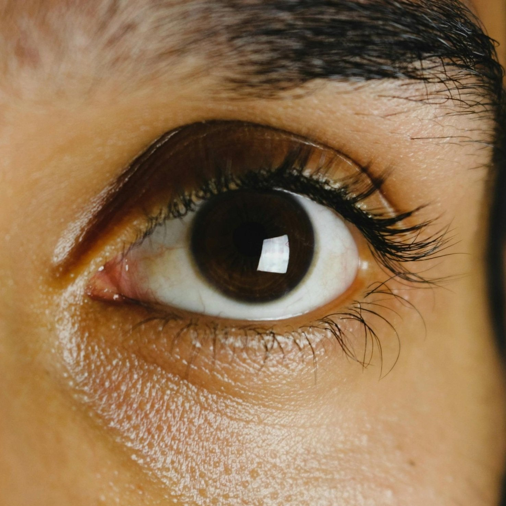
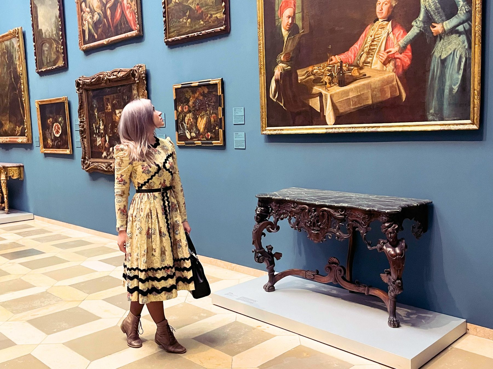
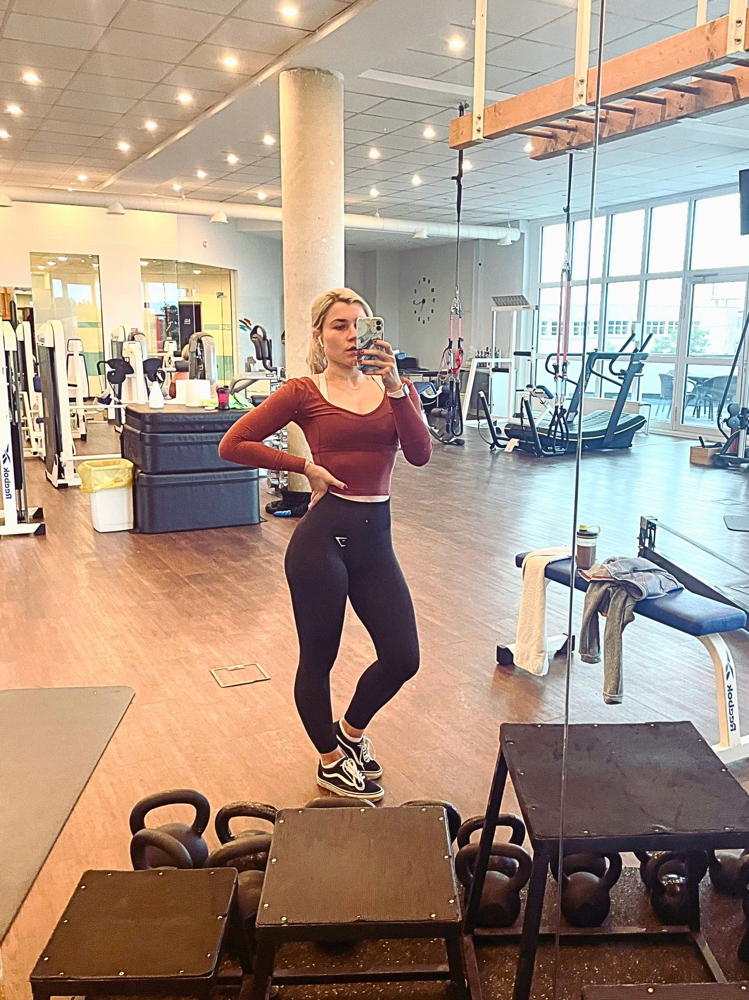
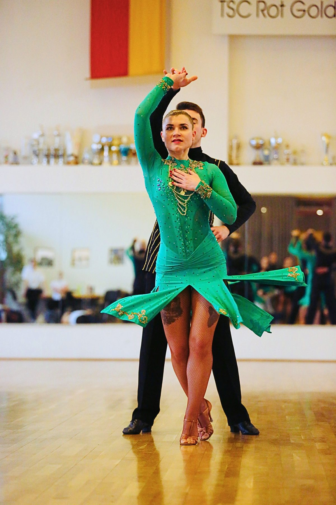

Über mich
Mein Name ist Anna Hellmuth. Ich bin Ärztin, Psychologin und Life Coach.
Ich begleite Menschen zu mehr Wohlbefinden - mit transformierenden Prozessen, die medizinisches und psychologisches Wissen verbinden.
Meine Faszination für Körper und Geist reicht bis in meine frühesten Erinnerungen. Ich wollte Chirurgin werden, die Komplexität des Menschen verstehen, und habe enorm viel dafür investiert. Doch wie so oft hatte das Leben andere Pläne.
In Ausbildung und Beruf sah ich immer wieder Patientinnen und Patienten in vermeidbaren Gesundheitskrisen mit lebensverändernden Folgen. Mir wurde klarer, dass die innere Haltung oft mehr für ihr Wohlbefinden bedeutete als die Medikamente, die wir verschrieben - und das machte mich zutiefst unzufrieden. Dieser innere Konflikt endete in einem schweren Burnout.
Als ich meinen eigenen Weg aus der Krise suchte, vertiefte sich mein Interesse an Psychologie und psychotherapeutischen Werkzeugen. Ich begann Psychologie formal zu studieren - und fand sowohl meine eigene Heilung als auch meine Berufung: Leben und Gesundheit von Menschen durch tiefe Veränderungen in ihrer inneren Welt zu verwandeln. Ich wollte nicht erst späte Krankheitsstadien behandeln, sondern früh zu Wohlbefinden beitragen.
Nachdem ich meine eigene innere Kraft und meine Talente freigelegt habe, begleite ich Klientinnen und Klienten gern durch ihre Transformationsprozesse. Mein Ansatz verbindet medizinisches und psychologisches Wissen mit psychotherapeutischen und Coaching-Methoden - ein Weg, den ich täglich weiterentwickle und der mich tief erfüllt.
Meine Ausbildung
- ✓ Ärztin - Bogomolets National Medical University, Ukraine
- ✓ Ärztin - Julius-Maximilians-Universität Würzburg, Deutschland
- ✓ Psychologin - Institute of Effective Psychology and Psychotherapy of Zina Shamoyan, Russland
- ✓ Coach - Institute of Effective Psychology and Psychotherapy of Zina Shamoyan, Russland
- ✓ Hypnotherapeutin (laufend) - Milton Erickson Gesellschaft für Klinische Hypnose, Deutschland.
Seit 2023 fließen diese Fähigkeiten in meine Online-Praxis - eine Quelle tiefer Inspiration, des Lernens und der Erfüllung. Ich weiß: Ich bin genau dort, wo ich sein soll.
Mein Arbeitsansatz
Medizinische und psychologische Wissenschaften in einem maßgeschneiderten, tief persönlichen Rahmen.

1. Integrativer Ansatz
Ich schöpfe aus verschiedenen psychologischen Theorien und passe meine Methoden an. Meine Basis ist humanistisch, oft ergänzt durch Hypnotherapie, psychodynamische Therapie, CBT oder systemische Aufstellungen.
2. Individuelle Begleitung
Ich verzichte auf starre Vorlagen. Jeder Weg ist einzigartig. Die Sitzungen richten sich ganz nach dem, was Sie hier und jetzt brauchen - nicht nach einem vorgegebenen Schema.
3. Fokus auf innere Ressourcen
Ich plane meine Woche bewusst und begrenze die Sitzungszahl, um voll präsent zu bleiben. Supervision und eigene Entwicklung haben Priorität - so kenne ich den Prozess von beiden Seiten.

4. Ganzheitliche Perspektive
Meine medizinische Ausbildung gibt mir ein tiefes Verständnis für Physiologie, Neurologie und das endokrine System - und damit für die Verbindungen zwischen Körper und Geist.

5. Beharrlichkeit & Empathie
Jeder Mensch trägt den Wunsch nach Wachstum in sich. Meine Arbeit beruht auf Empathie, Kreativität und Entschlossenheit - und begleitet Sie behutsam zu einem Wendepunkt der Resilienz.
6. Tiefes Verständnis für Schmerz
Ich bin diesen Weg selbst gegangen: durch Burnout, einen großen Berufswechsel, das Sich-Verlieren und Wiederfinden und den Schmerz des Krieges in meiner Heimat. Ich weiß, wie man einen Ausweg findet.
Ich weiß, wie viel eine gute Spezialistin und ein guter Coach bewirken können - und ich bin überzeugt: Das ist Schritt eins.
Wenn Sie schon einmal einen wirklich transformierenden Moment in einer Therapie erlebt haben, wissen Sie, wofür ich hier bin.
Vereinbaren Sie Ihr kostenloses ErstgesprächUnser gemeinsamer Weg
Schritt für Schritt hin zu nachhaltiger Veränderung.
Schritt 1: Sicherer Raum
Wir schaffen einen sicheren, vertraulichen Raum, in dem Sie ganz ehrlich sein und jedes Thema ansprechen können.
Schritt 2: Begleitete Erkundung
In diesem Raum gebe ich Rückmeldung und begleite Ihre Selbstentdeckung - mit Respekt für Ihre Autonomie und als Stütze für Ihre authentischen Entscheidungen.
Schritt 3: Transformation
Sie legen emotionale Last ab, gewinnen ein tiefes Verständnis für Ihr Kernselbst und Ihre echten Bedürfnisse und bauen Resilienz auf.
Schritt 4: Nachhaltige Veränderung
Wie ein sorgfältig gesetzter Samen entfaltet sich unsere Arbeit zu nachhaltigen, schönen Veränderungen - auch lange nach den Sitzungen.
Es gibt Eigenschaften, die ich bei Menschen sehe, die mit mir außergewöhnliche Ergebnisse erreichen. Klingt das nach Ihnen?

Sie wissen, dass Wachstum Einsatz braucht
Sie sind bereit, aktiv mitzuarbeiten, Zeit und Energie zu investieren, und wissen, dass neue Perspektiven der Schlüssel zum Fortschritt sind.
Sie suchen Tiefe
Sie wollen die Ursache und Wirkung Ihrer Erfahrungen verstehen. Sie suchen, was unter der Oberfläche liegt.
Sie sind offen & neugierig
Sie begrüßen neue Erfahrungen und wollen daraus lernen. Sie wissen: Andere Ergebnisse brauchen Experimente.
Sie geben sich nicht mit weniger zufrieden
Ihnen ist wichtig, von Gleichgesinnten umgeben zu sein, eine Laufbahn zu gehen, die zu Ihnen passt, und authentisch zu leben.

Sie folgen Ihrer Intuition
Viele meiner Klientinnen und Klienten sind stark intuitiv. Wenn die Zusammenarbeit stimmig wirkt, vertrauen Sie dem. Die richtige Fachperson zu finden, ist für alle entscheidend.
Wie fühlt es sich an, mit mir zu arbeiten?
Wie Klientinnen und Klienten die tief meditative Arbeit erleben
Warum ich das tue
Ich glaube daran, über Probleme und Grenzen hinauszuschauen und das rohe Potenzial in jedem Menschen zu sehen - mehr als die aktuelle Position und den Erfolg. In vielen Formen.
Wertvoll ist der Mensch in seiner Balance und mit seinen einzigartigen Gaben - nicht nur das Problem und der lange gehegte Traum. Meine Mission ist es, Menschen zu diesen Fähigkeiten zu führen, sie zu nutzen und dankbar dafür zu sein, dass sie Teil von uns sind.
Nichts ist erfüllender, als zu sehen, wie Sie aufblühen, authentisch leben und Ihre besondere Kraft mit der Welt teilen. Das ist das tiefste Gefühl - und mein Beitrag zum größeren Ganzen.
Meine Angebote
Ob Sie Lebensschwierigkeiten meistern oder mehr Erfüllung suchen: Ich biete Wege, die zu Ihrem individuellen Pfad passen.
Psychologische Beratung
Finden Sie die Kraft, emotionale Last abzulegen und innere Heilung zu ermöglichen.
Beratung entdeckenLife Coaching
Verwirklichen Sie ambitionierte Ziele und wachsen Sie über sich hinaus.
Coaching-Details ansehenNoch neugierig?
Ein Einblick in meine persönliche Welt
- • Ich bin hochsensibel (HSP) und laut Myers-Briggs vom Persönlichkeitstyp INFJ.
- • Ich bin seit 10 Jahren verheiratet - mit einer Glücksquote von ungefähr 96 %. :)
- • Zu meinen Hobbys gehören Gesellschaftstanz und Fitness.
- • Mode- und Schönheitsgeschichte faszinieren mich; ich habe eine kleine Sammlung vintage Kleider, Schmuck und Parfüms.
- • Ich liebe gemütliche Cafés, in denen ich die Atmosphäre genieße, Kaffee trinke und Menschen beobachte - zur Entspannung und Inspiration.
- • Lesen ist ein großer Teil meines Lebens. Wenn möglich, lese ich Bücher im Original - Übersetzungen fangen nicht alles ein.
- • Reisen inspiriert mich; in anderen Kulturen gewinne ich immer einen frischen Blick.
- • Als Kind wollte ich alle sieben Harry-Potter-Bücher in verschiedenen Sprachen lesen. Stand jetzt: Englisch, Deutsch, Ukrainisch und Russisch fließend; Italienisch lerne ich (A2). Hoffentlich reicht das Leben für mein Ziel. :)
- • Kunst, Musik, Film und Theater nähren meine Seele - und ich plane sie bewusst in mein Leben ein.
- • Ich liebe Tiere sehr und wollte als Kind Tierärztin werden. Davon bin ich abgekommen, weil ich Tierleid zu stark spüre. Seit 13 Jahren esse ich kein Fleisch; ein Großteil meiner Spenden geht an den Tierschutz.


